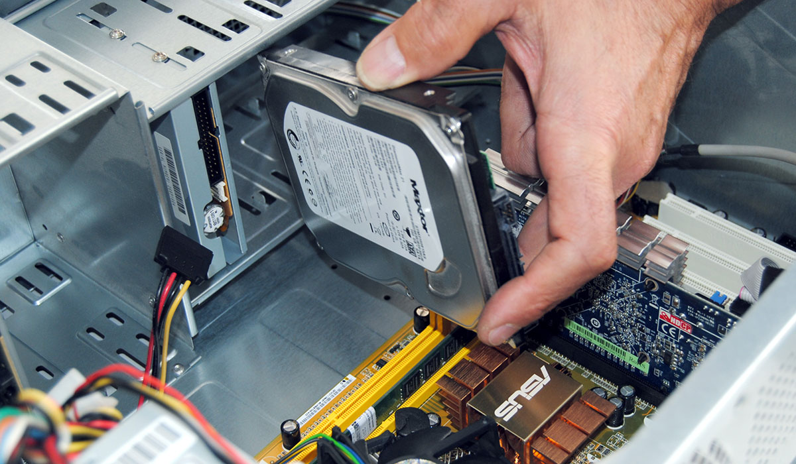
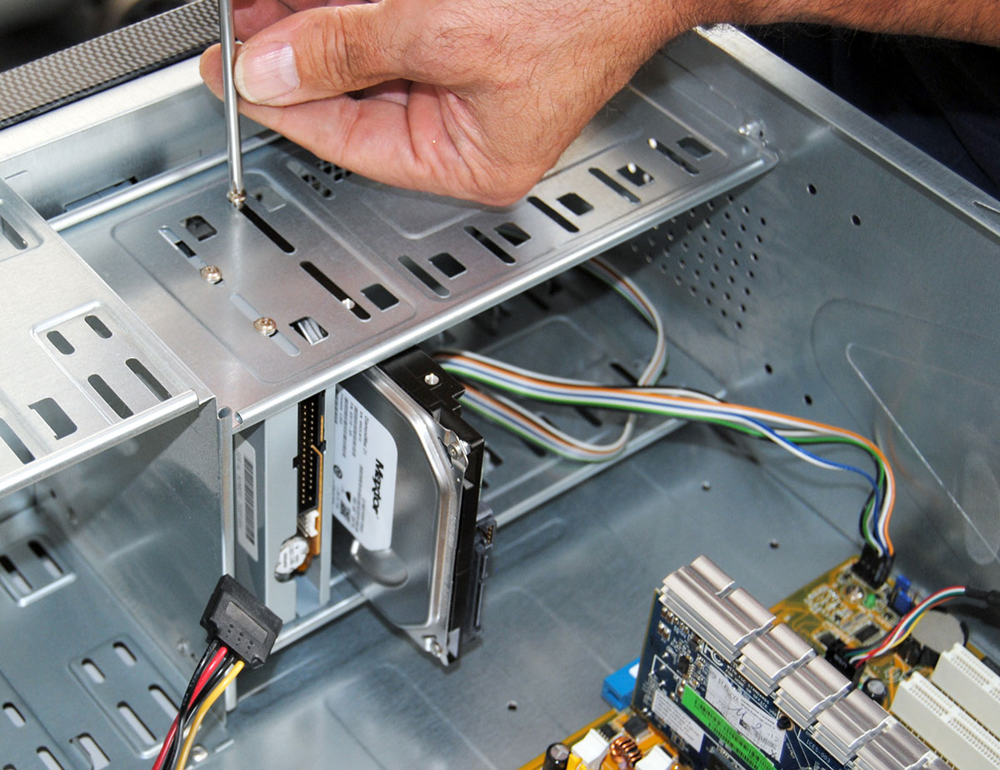

Disco solido
Una unità di memoria a stato solido in elettronica e informatica, è un dispositivo di memoria di massa basato su semiconduttore, che utilizza memoria allo stato solido (solid-state storage), in particolare memoria flash, per l'archiviazione dei dati.
piazzare l'hard disk nella posizione prestabilita e avvitarlo al case
 (clicca qui per vedere i prezzi)